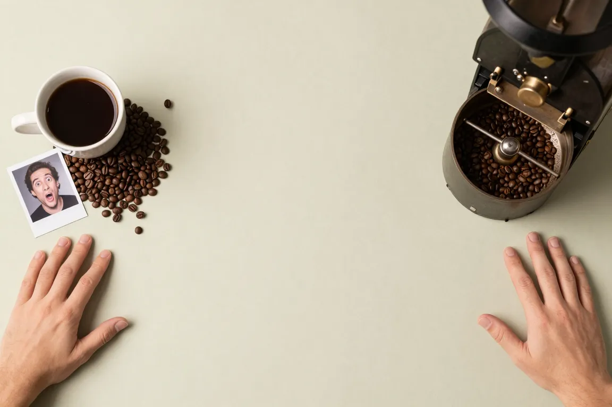

An anonymous board where each thread starts with an image: a pale page, posts with no account, post numbers, green quoted lines and threads that bump to the top and then fall off.

Core thesis
Nobody has a name, so only the post counts; the newest reply keeps a thread alive.
Design principles
Start each thread with an image thumbnail of at most 250px at the left of the first post.
Sign each post 'Anonymous' with a date and a post number such as No.123456789.
Set a line that starts with > in green (#789922) as a quote or a story line.
Link a reply to an earlier post with >>123456789 in the link colour.
Put replies in boxes of a slightly darker tint than the page, stacked under the first post.
Show at most 10 pages of threads; a thread with a new reply moves to the top, and the last thread is deleted.
Use a centred board title at the top, with a short banner image above it.